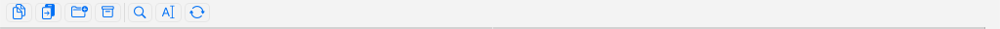

La barra de botones
La barra de botones es la tira de botones con iconos en la parte superior de la ventana. Cada botón es un atajo de un clic que defines tú mismo: ejecutar un comando integrado, iniciar un programa o app externos, saltar a una carpeta, o abrir toda una subbarra con más botones. Es la forma más rápida de tener a mano las acciones que más usas, y puedes adaptarla exactamente a tu manera de trabajar.
Personalizar la barra de botones
- Elige Configuración > Personalizar barra de herramientas…, o haz clic derecho en la barra y elige Editar barra de botones….
- La lista de la izquierda muestra los botones actuales. Usa + para añadir un botón, — para añadir un separador, − para quitar el botón seleccionado, y ↑ / ↓ para reordenar.
- Selecciona un botón y rellena el formulario de la derecha:
- Comando — escribe un comando integrado, o haz clic en Elegir… para escoger uno de una lista. También puedes introducir la ruta de un programa o app, una carpeta a abrir, u otra barra de botones para usar como subbarra.
- Título — la etiqueta y la información sobre herramientas del botón.
- Parámetros y Ruta inicial — se pasan a los programas externos. Los marcadores como
%P(carpeta de origen),%N(archivo actual) y%S(archivos seleccionados) se rellenan al ejecutar el botón. - Icono — elige un SF Symbol o usa el icono propio de un archivo o app; activa solo icono para ocultar el título. - Haz clic en Guardar. La tira se recarga de inmediato.

(Figura: La barra de botones se sitúa encima de los paneles de archivos; cada botón ejecuta un comando, un programa, una carpeta o una subbarra.)Subbarras y desbordamiento
Un botón puede abrir una subbarra: un segundo conjunto de botones superpuesto al primero. Haz clic en él para bajar; un botón ◀ a la izquierda te devuelve a la barra anterior. Cuando hay más botones de los que caben en el ancho de la ventana, los sobrantes se pliegan tras una comilla angular » en el extremo derecho; haz clic en ella para alcanzarlos.
Soltar archivos sobre un botón
Puedes arrastrar archivos o carpetas directamente sobre un botón:
- Botón de carpeta — los elementos soltados se copian en esa carpeta en segundo plano.
- Botón de programa — el programa se ejecuta con los elementos soltados como su selección.
- Botón de comando — el comando se ejecuta como de costumbre.
Barra de botones vertical
Para mover la tira de la parte superior de la ventana a una columna en el lado izquierdo, elige Visualización > Barra de botones vertical. Elígela de nuevo para volver a la tira horizontal.
Notas
- La barra se guarda en un archivo de barra de botones estándar compatible con Total Commander, así que las barras que ya tengas pueden reutilizarse.
- No hay atajos de teclado asignados a estas acciones por omisión, pero puedes añadir los tuyos: consulta Atajos de teclado.
- Un botón sin icono y sin comando se muestra como un separador simple, útil para agrupar botones relacionados.